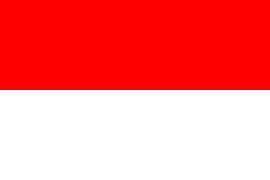
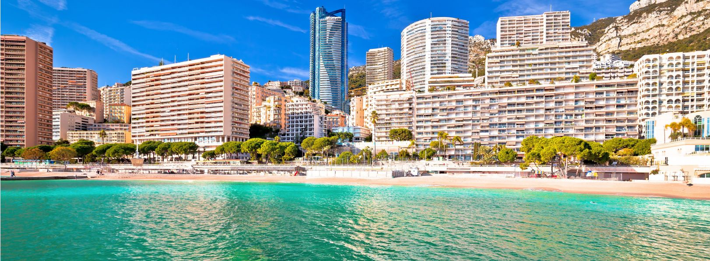

Capital: Mónaco
(es una ciudad-estado, por lo que la ciudad y el país son el mismo territorio).
Bandera:

Región:
Debido a su pequeño tamaño,
Mónaco no se divide en regiones amplias como
lo hacen otros países, pero se organiza en varios
distritos o barrios.
Monaco Ville
También conocido como "Le Rocher" (La Roca), es el casco antiguo de Mónaco y
alberga el Palacio del Príncipe, la Catedral de Mónaco y
el Museo Oceanográfico. Es el corazón histórico y administrativo del país.
Nombre:Monaco Ville
Poblacion:975
Superficie en Km2: [20]
Atracciones turísticas más importantes de Monaco Ville
Palacio del Príncipe
Catedral de Mónaco
Museo Oceanográfico
Monte Carlo
Famoso por su casino de lujo, el Casino de Montecarlo, y por ser un distrito
lleno de hoteles de lujo, restaurantes,
y boutiques de alta gama. Es un centro turístico y de entretenimiento mundialmente conocido.
Nombre:Monte Carlo
Poblacion:Monte Carlo tiene una población
de aproximadamente 16,000 habitantes.
Superficie en Km2: [La superficie de Monte Carlo es de alrededor de 0.61 km².]
Atracciones turísticas más importantes de Monaco Ville
Casino de Monte Carlo: Un símbolo de lujo y glamour,
el casino es conocido por su arquitectura impresionante y su ambiente elegante.
Circuito de Mónaco: El circuito urbano de Fórmula 1 más famoso del mundo,
que atraviesa las calles de Monte Carlo durante el Gran Premio de Mónaco.
Jardines de la Costa: Hermosos
jardines públicos con vistas panorámicas al Mediterráneo y a la ciudad de Monte Carlo.
La Condamine
Este barrio es conocido por su puerto, Port Hercule, donde se
pueden ver yates de lujo. Es una zona comercial y residencial importante,
con mercados y tiendas.
Nombre:La Condamine
Poblacion:La Condamine tiene una población de aproximadamente
3,000 habitantes.
Superficie en Km2: [La superficie de La Condamine es de alrededor de 0.3 km².]
Atracciones turísticas más importantes de Monaco Ville
Puerto de Hércules: Uno de los puertos deportivos más grandes y concurridos del
Mediterráneo, lleno de yates de lujo y rodeado de restaurantes, bares y tiendas.
Mercado de La Condamine: Un mercado al aire libre que ofrece una variedad
de productos frescos, incluyendo frutas, verduras, pescado y flores.
Plaza d'Armes: Una encantadora plaza rodeada de edificios históricos, cafés y boutiques.
Fontvieille
Es una zona relativamente nueva, desarrollada en terrenos ganados al mar. Alberga el
estadio de fútbol Stade Louis II, varias empresas y la colección
de autos antiguos del Príncipe de Mónaco.
Nombre:Fontvieille
Poblacion:Fontvieille tiene una población de aproximadamente
3,000 habitantes..
Superficie en Km2: [La superficie de Fontvieille es de alrededor de 0.34 km².]
Atracciones turísticas más importantes de Monaco Ville
Puerto de Fontvieille: Un puerto deportivo moderno y
elegante con yates de lujo y una variedad de servicios náuticos.
Jardines de Fontvieille: Espacios verdes bien cuidados que ofrecen áreas para pasear,
hacer picnic y relajarse mientras disfrutas de las vistas al mar.
Estadio Louis II: Un complejo deportivo que alberga el estadio de fútbol del AS Monaco,
así como instalaciones para atletismo, natación y otros deportes.
Moneghetti
Situado en una ladera, es conocido por sus residencias y
su proximidad al área de Les Révoires.
Nombre:Moneghetti
Poblacion:Moneghetti tiene una población de aproximadamente
16,000 habitantes.
Superficie en Km2: [La superficie de Moneghetti es de alrededor de 0.25 km².]
Atracciones turísticas más importantes de Monaco Ville
Parque de la Colina de Moneghetti: Un parque público con senderos para caminar,
áreas verdes y miradores que ofrecen vistas panorámicas de Mónaco y el Mediterráneo.
Villa Paloma: Un museo de arte contemporáneo ubicado en una mansión renovada,
que alberga exposiciones temporales y una colección permanente de arte moderno.
Jardín Exótico de Mónaco: Aunque no se encuentra en Moneghetti, el Jardín Exótico está ubicado cerca y es una atracción turística importante,
con una impresionante colección de plantas exóticas y un sistema de cuevas subterráneas.
Larvotto

Es el barrio que alberga la playa de Mónaco. Conocido por sus hoteles
y apartamentos de lujo, así como por ser una zona de ocio y recreación.
Nombre:Larvotto
Poblacion: Larvotto tiene una población de aproximadamente 5,000 habitantes.
Superficie en Km2: [La superficie de Larvotto es de alrededor de 0.44 km².]
Atracciones turísticas más importantes de Monaco Ville
Playa de Larvotto: Una hermosa playa de arena con aguas cristalinas,
que ofrece servicios como alquiler de tumbonas, sombrillas y deportes acuáticos.
Paseo Marítimo de Larvotto: Un paseo marítimo bordeado de palmeras y restaurantes
con vistas al mar, ideal para pasear, hacer footing o simplemente relajarse.
Monte Carlo Bay Casino: Un casino de lujo y complejo hotelero ubicado en Larvotto, que ofrece una variedad de
juegos de azar, restaurantes y entretenimiento en un entorno elegante y contemporáneo.